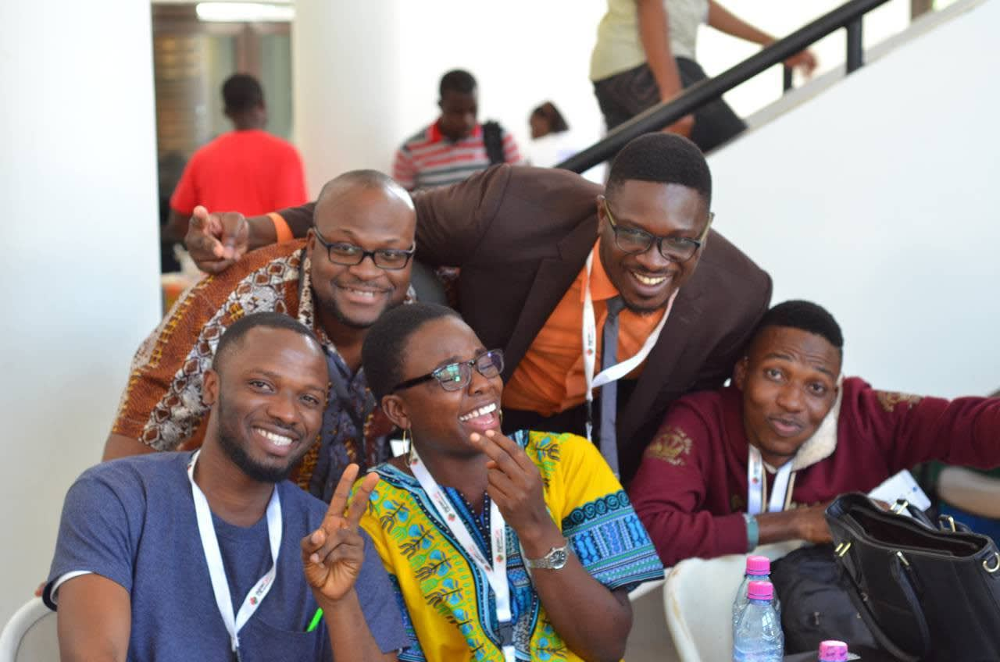

Conferences · Tech
PyCon Ghana
- Dates
- Dates TBA
- Venue
- Accra (last official 2026 venues: Google AICC and ALX Tech Hub, One Airport Square)
- Location
- Accra, Ghana
- Format
- In-person
- Category
- Tech
- Industry
- Python / developer conference
- Organiser
- PyCon Ghana
- Official website
- https://gh.pycon.org/
About
Official 2026 site (fetched 24 Nov 2026, also served at gh.pycon.org) presents PyCon Ghana 2026, 20–22 August 2026 in Accra (workshop day 20 Aug at Google AICC; main days 21–22 Aug at ALX Tech Hub, 4th Floor, One Airport Square) — past. Recurring official conference; no official 2027 dates. Ghana dates are local (Greenwich Mean Time, GMT, Africa/Accra, UTC+0, no daylight saving).
Topics: Python, software engineering, data science, workshops.
No organiser attendance figure found on the official pages checked (24 Nov 2026). Ranked by an estimated size tier 'medium' (our judgement from format, venue and scale, not an official number).